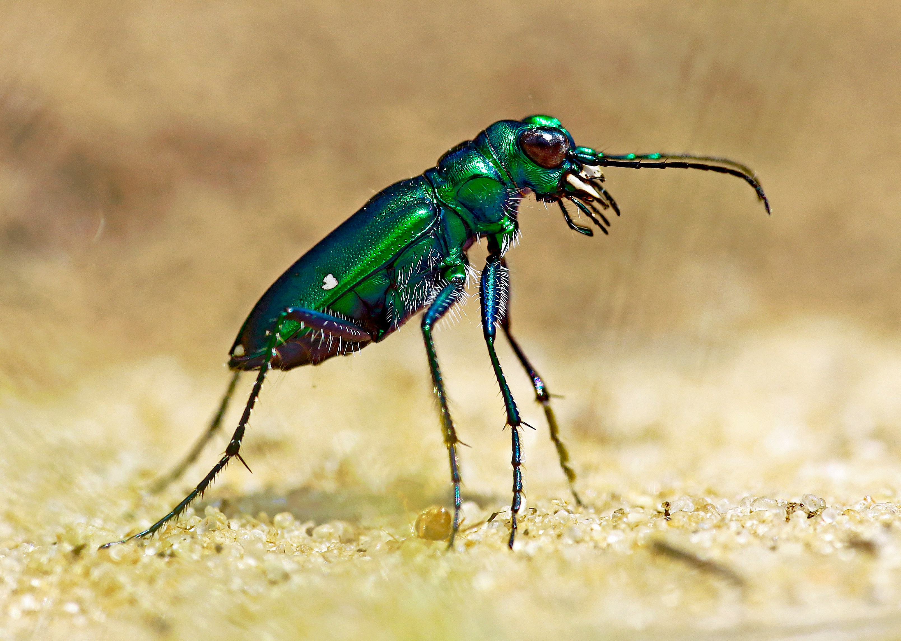
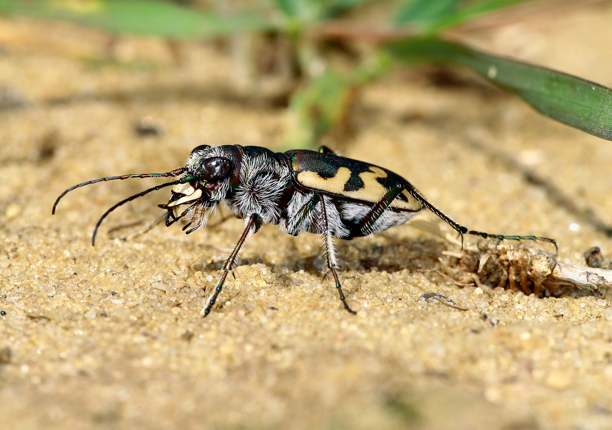

Tiger beetles are a group of fast-moving predatory insects known for their speed, agility, and powerful jaws (similar to a preying mantis). They are often found in sunny, open areas such as sandy paths, trails, and riverbanks.
These beetles use their long legs to run at high speeds after prey. They can move so fast that they sometimes have to stop because their vision temporarily blurs.

Tiger beetles come in a wide variety of colors and patterns. Some species are bright metallic green, while others have darker bodies with yellow or white markings. Some are even fuzzy like the Sand Tiger Beetle! These colors match their enviroment and help them blend in and avoid predators.
| Feature | Details |
|---|---|
| Speed | Up to 5.6 mph!! |
| Color | Metallic green, blue, or bronze. Others can be more on the dull side with more diluted colors. They have a wide variery of colorations. |
| Lifespan | A few months and up to a year. |
Visit this page for more information: Tiger Beetle on Wikipedia